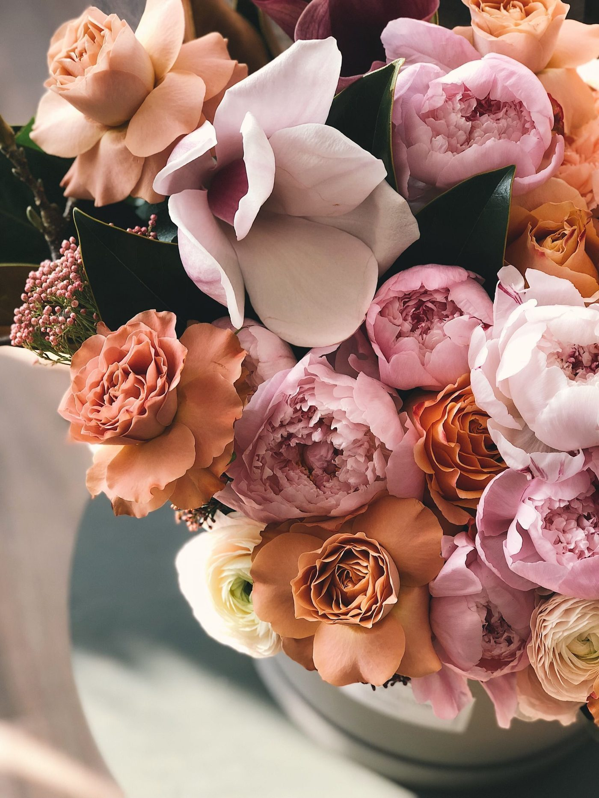

In bloom, in stock photos


Humphreys Flowers is a family-owned flower shop in Chattanooga since 1934. It offers wedding flowers, bouquets, same-day delivery, gifts, orchids, and tropical and exotic flowers. Call to ask about an order.

1220 McCallie Ave, Chattanooga, TN 37404
Monday to Friday 9:00 AM to 5:00 PM